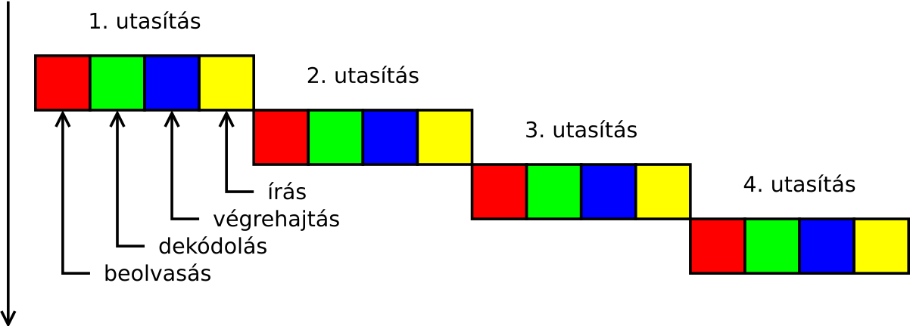
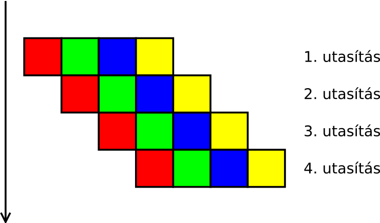
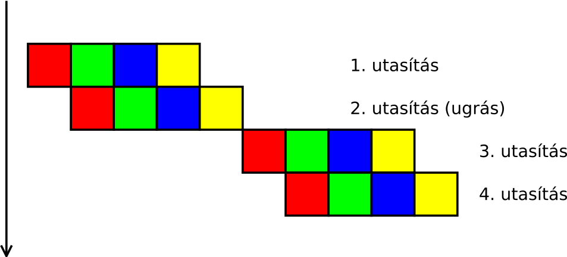
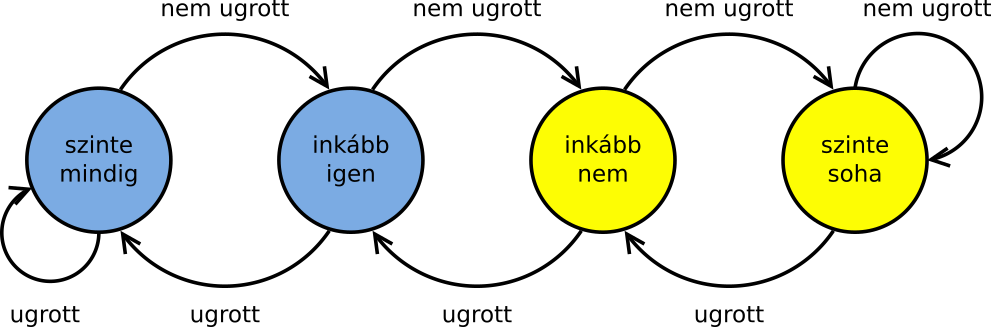

Adventi naptár
Czirkos Zoltán · 2019.02.27.
Rendezett tömbök – egy érdekes jelenség
Az előadáson szerepelt, hogy a rendezett tömbökön több műveletet is gyorsan tudunk csinálni: egy adat elérése O(1) időben történik, mint a tömböknél mindig, és a keresések is O(n)-ről O(log n)-re gyorsulnak. Persze, hiszen bináris keresést alkalmazhatunk, amely minden lépésben kizárja a tömb egyik felét. Nem egyesével kell megkeresnünk a szükséges elemet, hanem mindig megfelezhetjük a vizsgálandó részt.
Ami ennél érdekesebb, hogy a tömb elemeinek összegzése is gyorsabbá válhat a rendezéstől.
Micsoda?! Nem mindegy az összegzésnél, milyen sorrendben vannak?! Úgyis fel kell dolgozni az összes elemet, nem? Nézzünk meg egy furcsa példát, ahol nem mindegy az összegzésénél a sorrend!
Adott az alábbi program. Ez generál egy 0…199 véletlenszámokból álló tömböt, amelynek elemeit, ha kisebbek 100-nál, összegzi. Ezt az összegzést pedig 50000-szer csinálja meg. Oké, elvégezhetnénk az egészet egy szorzással, meg lehet, hogy a változó túlcsordul, de nem is ez a lényeg: a lényeg az az, hogy mennyi ideig fut a program.
#include <stdio.h>
#include <stdlib.h>
#include <time.h>
int bajtcmp(void const *vb1, void const *vb2) {
unsigned char b1 = *(unsigned char *)vb1;
unsigned char b2 = *(unsigned char *)vb2;
if (b1 < b2) return -1;
if (b1 > b2) return +1;
return 0;
}
int main(void) {
enum { MERET = 32768, HANYSZOR = 50000 };
unsigned char tomb[MERET];
/* random számokkal tele */
for (int i = 0; i < MERET; ++i)
tomb[i] = rand() % 200;
/* rendezzük, vagy nem? */
qsort(tomb, MERET, sizeof(tomb[0]), bajtcmp);
/* összegezzük a 100-nál kisebbeket egy csomószor */
clock_t mettol = clock();
int sum = 0;
for (int j = 0; j < HANYSZOR; ++j)
for (int i = 0; i < MERET; ++i)
if (tomb[i] < 100)
sum += tomb[i];
clock_t meddig = clock();
/* mennyi ideig tartott? */
printf("%g masodperc.\n", (meddig - mettol) / (double)CLOCKS_PER_SEC);
return 0;
}Amint most ezt írom, a gépemen optimalizálás nélkül fordítva a programot (Code::Blocks/GCC:
-O0 paraméter a fordítónak), a rendezett tömböt 6,38 másodperc alatt lehet összegezni. A
qsort() kitörlésével rendezetlen marad a tömb, ilyenkor a futásidő 16,22 másodperc. Tehát
két és félszer lassabb.
Az optimalizálást itt ki kell kapcsolni, mert egy jó fordító észreveszi, hogy a ciklusban tulajdonképp nem csinálunk semmit, vagyis hát azt, hogy rengetegszer csináljuk meg ugyanazt.
Mi is történik itt? Tudja a fordító, hogy rendezett a tömb, és aszerint optimalizálná a programot? Ne találgassunk, nézzük meg a lefordított kódot (GCC -S paraméter), abból is a belső ciklushoz tartozó spagettis részt. Ez nem annyira szörnyű, mint amilyennek elsőre kinéz, felismerhető benne a ciklus:
idegzetűeknek
movl $0, -32812(%rbp) ; i = 0
jmp .L9 ; ugrás L9-hez
.L11:
movl -32812(%rbp), %eax ; i index a memóriából
cltq
movzbl -32784(%rbp,%rax), %eax ; bájt olvasása a tömbből (move)
cmpb $99, %al ; összehasonlítás 99-cel
ja .L10 ; ugrás, ha nagyobb (jump if above)
movl -32812(%rbp), %eax ; i index a memóriából (megint)
cltq
movzbl -32784(%rbp,%rax), %eax ; bájt olvasása (megint)
movzbl %al, %eax
addl %eax, -32804(%rbp) ; sum növelése
.L10:
addl $1, -32812(%rbp) ; i++
.L9:
cmpl $32767, -32812(%rbp) ; összehasonlítás 32767-tel (compare)
jle .L11 ; ugrás, ha kisebb vagy egyenlő
; (jump if less or equal)
Láthatóan semmit nem optimalizált a fordító: még a tomb[i]szám kiolvasását a
memóriából is kétszer tette meg, pedig igazán elég lenne ezt a drága műveletet egyszer elvégezni.
Hol van itt a turpisság, mitől gyorsabb ez a program, ha rendezett a tömb? Mint kiderül: a turpisság a hardverben van. A processzor jön rá, hogy a tömb rendezett. Vagy ha arra nem is, valami másra. De hol, és főleg: hogyan?
Számítógép architektúrák
A processzor számára egy utasítás feldolgozása több lépésből áll. Ezek közül a legfontosabbak a következők:
- Az utasítás beolvasása a memóriából.
- Az utasítás dekódolása: ez lényegében az utasítást végrehajtó áramköri rész kiválasztását jelenti.
- A művelet elvégzése (számítás).
- Az eredmény cél helyre írása.
Például egy összeadásnál a dekódolás a bitenkénti, kettes számrendszerbeli összeadó áramköri rész aktiválását jelenti; a művelet elvégzése pedig azt, hogy megvárjuk, amíg az összeadást végző kombinációs hálózat elvégzi a dolgát. Az egyes utasítások végrehajtása sorban történik, egymást bevárják: 
Arra a dologra jöttek rá a processzorok tervezői ezzel kapcsolatban, hogy bár az egyes utasítások részműveletei egymásra épülnek, de az egymás utáni utasításoknál, mint nagyobb egységeknél, ez nem feltétlenül van így. Például amíg a dekódolás és a számítás történik, addig a memóriának semmi dolga nincsen. A beolvasás és az eredmény írása alatt pedig a dekódoló és a műveletvégző áramköri részlet áll tétlenül. Ez a holt idő csökkenthető, ha futószalagon (vagy inkább csővezeték? az angol neve pipeline) próbáljuk feldolgozni az utasításokat: amíg az előző utasítás számítás részművelete történik, addig beolvashatjuk a következő utasítást a memóriából. Így mire az egyik utasítás befejeződik, a következő már dekódolva is lehet. Ehhez jó bonyolult áramkörök kellenek, de megoldható.
Mivel az utasítások elvégzése ilyenkor egymással átlapoltan történik, a processzor sokkal gyorsabb lehet. Láthatóan a fenti négy utasításhoz az eredeti felénél is kevesebb időre van szükség: 
A mai processzorokban ezt olyannyira tökélyre fejlesztették, hogy nem négy, hanem akár 10-20 apró lépésre is bontják az utasítások feldolgozását. Minél kisebbek a lépések, annál hatékonyabban lehet átlapolni a végrehajtásukat.
Gond csak egy esetben van: a feltételes ugró utasításoknál (ja – jump if above, jle – jump if less or equal stb.) Ezeknél ugyanis az utasításban tárolt művelet végrehajtásáig (a feltétel kiértékeléséig) nem lehet tudni, hogy melyik lesz a következő utasítás. Még a memóriacímét sem tudja megmondani a processzor: ha kiderül, hogy nem kell ugrani, akkor a következő címről, ha pedig ugrani kell, akkor valahonnan egészen máshonnan kell venni a következő utasítást jelző bájtot. Ilyenkor a futószalag megakad. Ez nem kevés időveszteséget jelent a négy lépésből álló futószalag esetében sem, hát még akkor, ha több elemből állna! 
Mit lehet itt tenni? Hát, lehet például tippelni. Elkezdeni a következő utasítást végrehajtani, amelyik akkor jönne, ha nem kellene ugrani. Vagy azt, amelyik akkor jönne, ha kellene ugrani. Ha helyes volt a tipp, szerencsénk van: a futószalag nem akad meg. Ha helytelen, az sem nagy gond. A félig végrehajtott utasítás eredményét el kell dobni, és folytatni a programot a megfelelő helyen. (Például ha kiderül, hogy nem a kiválasztott összeadó utasítás jött volna, az összeadás eredményét nem kell visszaírni a memóriába.)
Ezt is csinálják a mai processzorok. Hogy mindez még hatékony is legyen, megpróbálják kitalálni azt, hogy egy ugrás be fog-e következni (ugrás előrejelzés – branch prediction). Minél nagyobb arányban sikerül ez, annál nagyobb a nyereség. A modern processzorok ugrás előrejelzői 90% feletti találati aránnyal dolgoznak: a programkód vizsgálatával, és egy ciklusmag párszori végrehajtása után szinte teljes biztonsággal előre tudják jelezni egy ugró utasítás feldolgozásának már egy egészen korai fázisában, hogy be fog-e következni az ugrás, vagy nem. 
Egy egyszerű előrejelző állapotgéppel is megvalósítható, minden ismert ugráshoz hozzárendelve a fenti állapotgépet. Ez annyira egyszerű, inkább egy számlálóként gondolhatunk rá: az értéke ugrásnál növekszik (legfeljebb 3-ig), nem ugrásnál csökken (legfeljebb 0-ig). Ha van egy ugrás a kódban, amely általában bekövetkezik, és csak ritkán nem, az állapotgép a kék állapotok körül fog tartozkodni; ha fordítva, akkor meg a sárgák körül lépked. A kékeknél ugrást jósol, a sárgáknál nem ugrást.
Ettől gyorsabb a program a rendezett tömbön.
A számok összegzéséhez szükséges időt ez az utasítás határozza meg:
if (tomb[i] < 100)
sum += tomb[i];Ha rendezetlen a tömb, az egyes számok hol 100 alatt vannak, hol felette – a feltétel teljesen véletlenszerűen értékelődik ki igazra vagy hamisra:
183 86 177 115 193 135 186 92 49 21 162 27 90 59 163 126 140 26 172 136 H I H H H H H I I I H I I I H H H I H H
Ezzel az ugrást előrejelző áramkör nem tud mit kezdeni – a véletlenszámok nem jósolhatóak. A találati aránya nem lesz jobb 50%-nál, annál, mintha teljesen véletlenszerűen tippelte volna be, hogy kell-e ugrani vagy nem. Viszont ha a tömb rendezett, a feltétel eredménye:
21 26 27 49 59 86 90 92 115 126 135 136 140 162 163 172 177 183 186 193 I I I I I I I I H H H H H H H H H H H H
Egy ilyen mintát még a legegyszerűbb előrejelzők is felismernek. Az első néhány iteráció után megtanulják, hogy a feltétel igazra értékelődik ki, és onnantól kezdve ez a tipp csomó ideig be is jön. Aztán hibáznak egy párat, és megtanulják azt, hogy a feltétel hamisra szokott kiértékelődni, és a tömb maradék részében azt tippelik. Mivel ilyenkor az utasítások végrehajtása sokkal többször át tud lapolódni, mint abban az esetben, amikor az előrejelző folyton hibázik, a program gyorsabb lesz. A fenti, erre kihegyezett programban az ugrás helyes előrejelzése 154%-os gyorsulást, azaz 254%-os sebességet eredményez!
Ha már itt tartunk, nézzük meg, mit csinál a fordító a programból akkor, ha arra kérjük, optimalizálja a programunkat. A gépóra két lekérdezése körüli rész:
mettol = clock();
sum = 0;
for (j = 0; j < HANYSZOR; ++j)
for (i = 0; i < MERET; ++i)
sum += tomb[i] < 100 ? tomb[i] : 0;
meddig = clock();
printf("%g masodperc.\n", (meddig-mettol)/(double)CLOCKS_PER_SEC);Lefordítva így néz ki (a call clock függvényhívásról megismerni):
call clock ; clock() függvény hívása movq %rax, %rbx ; visszatérési érték elmentése call clock ; clock() függvény újbóli hibása subq %rbx, %rax ; kivonás (ez már a mettől-meddig része)
Eltűnt a ciklus! Ja, hát kérem – mondta a fordító – ha a sum értéke
úgysincs használva a program többi részében, minek kiszámolni azt?